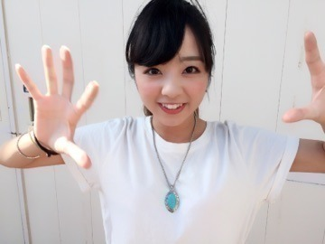
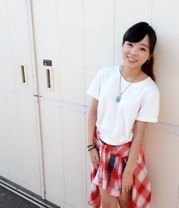
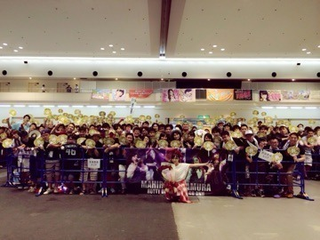
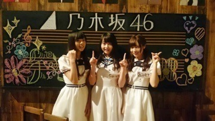

| 2015/07 28 Tue | 川村真洋 成人しました♡ ２０歳初ブログ。 まひろ |
こんにちわ♡
まにだよ？ ろってぃ−だよ？

私... ２０歳になりましたぁぁぁ♡♡
２０歳の豊富は，「２０歳ということで，大人の色気を、、、」とかありきたりな事は言わずにぃぃ，（笑）
「２０歳やからこそ，10代の若さを忘れずに！元気いっぱい，ポジティブに生きて行こ～～う‼︎」ですね（＾ω＾）♡
そして，土曜と日曜は京都にて握手会でした！ 来てくださった皆さん，暑い中本当にありがとうございました！！ 皆の体調が心配でした(｡-_-｡)。
今回のまに私服は，，，，，
こんな感じ♡

白Tシャツ（LOWRYS FARM）
チェックシャツ（SLY）
それに,握手会の途中に,私の生誕祭がありました！！！ あんなにも素晴らしい生誕祭を本当にありがとうございます！
サプライズには本当に驚きました！
まさか私の大好きな幼なじみのあかりってぃーからの手紙があるとは思いもしなかったよ。。
本当に驚いたし、嬉し過ぎました！
感動しちゃって,昔の事色々思い出して,涙が溢れてきちゃったんだけど,
この後に絢香さんの「Peace Loving People」歌うって分かってたから、ぐっとこらえたよね♪( ´▽｀)笑
泣いたら歌えないからね♡
でもやっぱ,あの場で1人で歌うのは緊張したなん♩笑 声震えてた様な気がする...。
皆が向日葵のウチワを振ってくれて嬉しかったよ♡？ ハッピーバースデーも歌ってくれて嬉しかったよ♡？
この日のために皆で集まったり連絡とりあったりしてやり取りしてくれてたんだよね。。。 本当に感謝でいっぱいだよ。(´･_･`)♡♡
みんな大好き。本当にありがとう。 メンバーのみんなもありがとう。

はい！これは「ケータイ大喜利」の時に私達のバックにあった黒板だよ♡
実はこれ, まひろ まりか ゆうりの落書きしたんだよ（＾ω＾）
まひろが左 ゆうりが右 まりかが文字。

私、普段絵描かないから、こういう機会がないと書かないんですよね 笑、、、
最後に告知します。
【ラーメンWalkerTV2】
7/29 16:00~CSフジテレビONEにて
(以降、CSフジテレビONE,TWO,NEXTの3チャンネルで多数リピート放送あり)
【MUSIC FAIR】
8/1（土）18:00～18:30
チェックの方よろしくお願いします♡
ではッ 昼ごはん食べます♡
またねぇ。